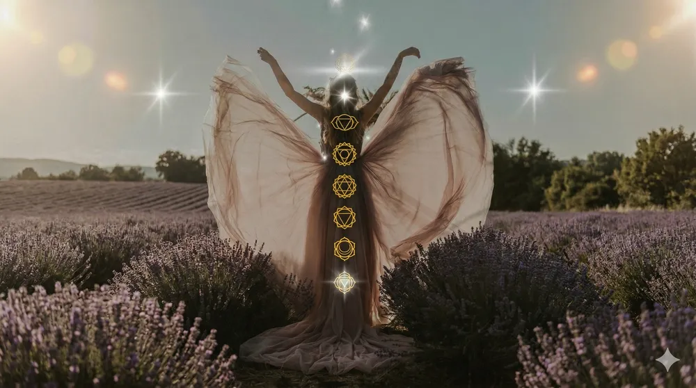

Anatomía de una Sesión
El camino de la Espiral Cuántica no es un proceso lineal; es una evolución constante hacia tu ser más elevado. Transitamos la espiral para pasar de la desconexión a la manifestación consciente.
El Escaneo
A detailed intuitive and energetic assessment to identify blockages and determine your system's immediate needs through resonant observation.
La Apertura
Gentle somatic unwinding designed to soften physical fascia and prepare the neural pathways for deeper energetic reception.

El Trabajo Profundo
The core of the journey. Weaving quantum resonance with breath protocols to facilitate profound cellular release and realignment.
La Integración
Integration into pure stillness. We anchor the expanded energetic state into your physical architecture for lasting structural shift.
